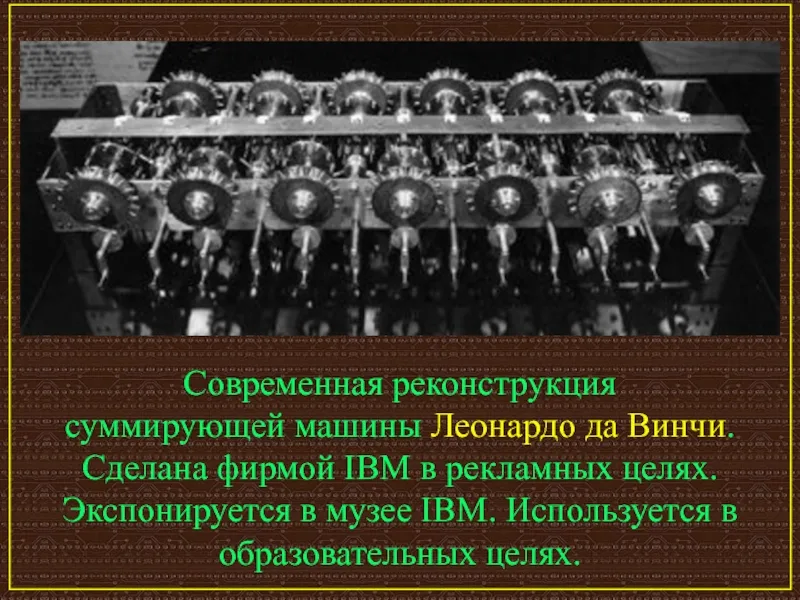
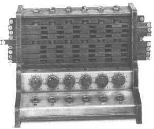
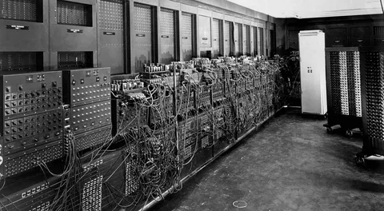
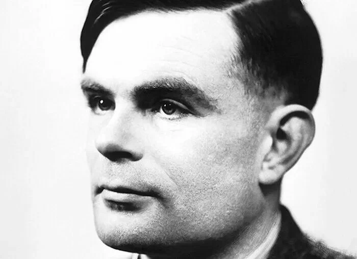

Глава 1: Основы и ранние этапы программирования
Содержание
-
Происхождение программирования
-
История первых вычислительных машин.
-
Появление первых алгоритмов (например, работы Алан Тьюринга)
Языки программирования первой генерации
-
Ассемблер и его роль в раннем программировании.
- Формальные языки и теории
-
Теория автоматов и формальные грамматики.
Появление высокоуровневых языков
- История FORTRAN и COBOL.
- Сравнение высокоуровневых и низкоуровневых языков.
Развитие операционных систем
- Влияние операционных систем на программирование.
- Примеры первых операционных систем (Unix, DOS).
Первые шаги в объектно-ориентированном программировании
- Основные концепции OOP и их возникновение.
- Языки, которые внедрили OOP (Smalltalk, C++).
1. Происхождение программирования
1.1. История первых вычислительных машин
Люди с давних времен сталкивались с необходимостью решать задачи, которые требовали сложных вычислений. Нужно было проводить землемерные работы, торговать, собирать налоги, управлять запасами урожая, путешествовать. Сначала считали на пальцах, камнях, узелках, а потом придумали первые счеты и логарифмические линейки. Кстати, само слово «компьютер» (от англ. compute — «вычислять») долгое время использовали для обозначения человека, производящего расчеты.
В Средние века уже стало понятно, что без специальных машин не обойтись. Так появились первые суммирующие устройства и арифмометры. Прообраз будущего электронного сумматора — важнейшего элемента будущих ЭВМ — описал еще Леонардо да Винчи. В 1969 году специалисты из IBM воспроизвели по чертежам машину да Винчи и еще раз убедились в гениальности ученого.
Далее была счетная машина Вильгельма Шиккарда, суммирующая машина Блеза Паскаля (знаменитая «Паскалина»), счетная машина Готфрида Вильгельма Лейбница и аналогичные изобретения других ученых.
Откуда вообще взялась идея программировать вычислительные операции? Все просто: нужно было все время сонастраивать механизмы башенных часов с системой колоколов. Кроме того, похожие задачи возникали и в других отраслях, например в швейной промышленности. В 1804 году появились перфокарты Жозефа Жаккара для ткацких станков, которые считаются первым устройством для запоминания и ввода информации.
Но ближе всех к созданию компьютера подошел в XIX веке профессор математики Кембриджского университета Чарлз Бебидж, разработавший основные принципы построения вычислительных машин, среди которых программное управление, использование перфокарт и деление информации на разные типы. А первым в истории программистом называют соратницу Бебиджа Аду Лавлейс — дочь знаменитого поэта Байрона. К сожалению, реализовать все идеи кембриджского профессора так и не удалось — это требовало слишком больших затрат, однако его вклад в развитие вычислительной техники трудно переоценить. Две его машины — разностная (1822 год) и аналитическая (1830 год) — опередили свое время.
Прошло еще почти сто лет, прежде чем появился полноценный компьютер в привычном понимании этого слова. Первой в мире ЭВМ считается машина ЕNIАС — проект американских ученых Джона Моучли и Джона Эккерта, который они представили в 1942 году. Но ЕNIАС возник не сам по себе: примерно в одно и то же время появилось несколько машин, которые с оговоркой тоже могут претендовать на звание первого компьютера.
Принцип ЭВМ описанный Леонардо да Винчи

История механических этапов развития компьютерной техники начинается с 1492 г., когда в 1452-1519 годах. Леонардо Да Винчи разработал схему счетного агрегата и описывал его в дневнике, сегодня известном как двадцатитомник «Мадридского кодекса». Эти дневники долгое время оставались безызвестными в национальной библиотеке Испании до 13 февраля 1968 года, пока американские исследователи не нашли их.
Основой счетной машины являлись стержни, имевшие два зубчатых колеса, большие - на одной стороне, а маленькие - на другой. Как мы видим на эскизе Леонардо Да Винчи, стержни были расположены таким образом, чтобы небольшое колесо одного стержня входило в сцепление большого колеса соседнего стержня. Именно поэтому десять вращений первого ствола привели к одном полному вращению второго ствола, десять вращений второго ствола - к одном полному вращению третьего ствола и т.д. Вся система составляла тринадцать стержней и двигалась с помощью наборного груза.
Cчетная машина Вильгельма Шиккарда

Изобретение, которое стало первой счетной машиной, было создано в 1623 году. Шиккард изобрел и разработал модель шестиразрядного механического вычислительного устройства, выполняющего простые математические функции, такие как — складывать и вычитать числа. Не даром его называли «часами для счета». Машина Шиккарда содержала суммирующее и множительное устройства, а также механизм для записи промежуточных результатов.
В одном из писем Кеплеру (от 20 сентября 1623 года) сообщалось, что Шиккард осуществил механически все то, что Кеплер делал алгебраически, а именно — сконструировал машину, которая автоматически выполняла сложение, вычитание, умножение и деление. Шиккард писал, что Кеплер приятно удивился, если бы увидел как устройство само накапливает и переносит влево десяток или сотню цифр и как отнимает то, что держала в памяти при вычитании.
Изобретение, которое стало первой счетной машиной, было создано в 1623 году. Шиккард изобрел и разработал модель шестиразрядного механического вычислительного устройства, выполняющего простые математические функции, такие как — складывать и вычитать числа. Не даром его называли «часами для счета». Машина Шиккарда содержала суммирующее и множительное устройства, а также механизм для записи промежуточных результатов.
ЕNIАС - первая в мире Электрическая Вычислительная Машина

Electronic Numerical Integrator and Computer (ENIAC) был одним из первых в мире компьютеров общего назначения. В этом году ENIAC исполняется 78 лет. Его создания считается одной из важнейшей вех развития компьютерной техники, в частности, потому, что этот компьютер был Тьюринг-полным.
В ходе создания ENIAC ученые и инженеры предложили множество новых идей, которые в дальнейшем стали базой для построения электронно-вычислительных машин уже гораздо более совершенных, чем ENIAC.
ENIC был нужен, в частности, для расчета траекторий полета баллистических ракет и других снарядов. Просчитать вручную все это было можно, но процесс занимал крайне много времени. В некоторых случаях военным требовалась информация по нескольким тысячам траекторий полета снаряда, причем на расчет каждой из них требовалось по 1000 и более операций. Соответственно, у одного человека на выполнение всего этого комплекса вычислительных задач уходило около 2 недель, а иногда — и месяцев.
1. Происхождение программирования
1.2 Появление первых алгоритмов (например, работы Алан Тьюринга)

Алан Тьюринг, английский математик и логик, внёс значительный вклад в развитие теории вычислений и стал одним из пионеров в области разработки алгоритмов. В 1940-х и 1950-х годах зародились ключевые концепции программирования и теория вычислений, ставшие основой для развития современных компьютерных наук. Вскоре после появления первых компьютеров появились и первые языки программирования, такие как Assembler, Fortran и COBOL, которые изменили подход к написанию программ и стали фундаментом для компьютерной индустрии.
Сейчас мы рассмотрим даного человека и его вклад в развитие программирования.
Алан Тьюринг (1912–1954) был одним из самых влиятельных учёных в области математики, логики и теории вычислений. Его работы не только заложили основы для современной информатики, но и продемонстрировали потенциал компьютеров как универсальных машин для решения разнообразных задач.
Еще в Кембридже Алан задумал создать универсальное вычислительное устройство. В 1936 году молодой ученый представил абстрактную модель, которая выполняла любые возможные математические действия. Позже ее назвали машиной Тьюринга. Интересно, что в основе работы лежала двоичная система счисления, хотя в те времена преобладала десятичная. Устройство состояло из двух частей: бесконечной ленты, разделенной на ячейки, в каждой из которых записан математический символ;
головки, которая движется по ленте, считывает данные и выполняет заданные действия по строгим правилам — алгоритмам. Тьюринг показал — если задачу можно представить в виде последовательных логических шагов, она под силу машине. Эта идея стала фундаментом для развития информатики.
2. Языки программирования первой генерации
2. Ассемблер и его роль в раннем программировании
Первые ассемблеры были спроектированы Кэтлин Бут в 1947 под ARC2 и Дэвидом Уилером[англ.] в 1948 под EDSAC, при этом термин «ассемблер» не использовали, просто называя язык «множеством базовых команд» (англ. basic order set) и «начальными командами» (англ. initial orders) соответственно. Впервые термин «ассемблер» для процесса объединения полей в командное слово начали использовать более поздние отчёты по EDSAC.
Также на ранних этапах развития программирования было введено понятие автокод — язык программирования, предложения которого по своей структуре в основном подобны командам и обрабатываемым данным конкретного машинного языка. В настоящее время термин фактически не используется.
Исторически, если первым поколением языков программирования считать машинные коды, то язык ассемблера можно рассматривать как второе поколение языков программирования. Недостатки языка ассемблера, например, сложность разработки на нём больших программных комплексов, позже привели к появлению языков третьего поколения — языков программирования высокого уровня (таких как Фортран, Лисп, Кобол, Паскаль, Си и другие).
3. Формальные языки и теории
3. Теория автоматов и формальные грамматики.
Теория автоматов - это раздел дискретной математики, изучающий математические модели автоматов и имеющий широкое применение в научных и прикладных исследованиях.
Такими автоматами могут быть как реальные устройства, так и абстрактные системы.
Теория автоматов позволяет доказывать разрешимость различных утверждений, записанных формальными средствами, с помощью математической логики и теории алгоритмов.
Теория формальных языков представляет собой формализацию лингвистики с использованием математических обозначений.
Коротко говоря, формальный язык — это математическая модель реального языка. Под реальным языком здесь понимается некий способ коммуникации (общения) субъектов друг с другом. Для общения субъекты используют конечный набор знаков (символов),
которые проговариваются (выписываются) в строгом временном порядке, т.е. образуют линейные последовательности. Такие последовательности обычно называют словами или предложениями. Таким образом, здесь рассматривается только т.н.
коммуникативная функция языка, которая изучается с использованием математических методов. Другие функции языка здесь не изучаются и, потому, не рассматриваются.
Грамматика - это набор правил вывода, по которым одни слова можно преобразовывать в другие.
4. Появление высокоуровневых языков
4.1 История FORTRAN и COBOL.
Fortran: язык для науки
Fortran (от "Formula Translation") был создан в 1957 году командой IBM под руководством Джона Бэкуса. Его цель была проста: сделать программирование доступным для ученых и инженеров. До этого программы писались на машинном коде, что было крайне сложно и времязатратно.
Fortran стал первым высокоуровневым языком программирования. Он позволял писать программы, близкие к математическим формулам, что сделало его незаменимым инструментом для научных расчетов. Например, именно на Fortran писали программы для моделирования ядерных реакций и расчета траекторий космических аппаратов.
COBOL: язык для бизнеса
COBOL (Common Business-Oriented Language) появился в 1959 году. Его создали для обработки данных в бизнесе и финансах. COBOL был разработан так, чтобы быть понятным даже для людей, далеких от программирования. Его синтаксис напоминал английский язык, что делало его удобным для написания бизнес-приложений.
Интересный факт: до сих пор многие банковские системы работают на COBOL. Несмотря на то, что язык считается устаревшим, его надежность и стабильность делают его незаменимым в критически важных системах.
4.2 Сравнение высокоуровневых и низкоуровневых языков.
Низкоуровневые языки
«Мозг» компьютера — это процессор. Именно он отдает указания и контролирует работу устройства. Процессор распознает команды только в двоичном коде — написанные при помощи нулей и единиц (100110). Цифры помогают машине понять, что именно нужно сделать — вывести на экран изображение, положить свитшот в корзину или запустить любимую игру.
У низкоуровневых языков нет встроенных функций. Они общаются с конкретным процессором, поэтому код одного компьютера не может быть использован на другом. У каждого производителя процессоров свой собственный набор инструкций.
Самые распространенные низкоуровневые языки — это машинный код и язык ассемблера.
Высокоуровневые языки
Язык ассемблера упрощает машинный код, но он все еще сложен для массового использования. Поэтому программисты начали создавать новые языки, которые больше упрощают программирование. Так появились высокоуровневые языки, синтаксис которых близок к английскому.
Высокоуровневые языки делятся:
на императивные (процедурные) — используются для написания инструкций, задают последовательность команд для процессора (Fortan, C, C++, Java и др.);
предметно-ориентированные (декларативные) — определяют результат кода (поиск по запросу при помощи SQL);
объектно-ориентированные — в основе которых лежат объекты (пользователь, кнопка, сообщение), каждый из которых имеет свои характеристики (имя, цвет, содержание и т.д). Объекты с похожими характеристиками можно объединять в классы (JavaScript, Python, C#, Lisp, Perl).
Понять высокоуровневый код без обработки, как и язык ассемблера, компьютер не может. Поэтому предварительно пропускает его через переводчик — компилятор и интерпретатор.
5. Развитие операционных систем
5.1 Влияние операционных систем на программирование.
Операционные системы (ОС) играют ключевую роль в программировании, так как они управляют аппаратными ресурсами и взаимодействием с пользователем.
Некоторые аспекты влияния ОС на программирование:
Влияние на выбор инструментов и языков программирования. Например, для разработки под Linux часто применяются такие языки, как C и Python, благодаря их совместимости с Unix-подобными системами.
Влияние специфических инструментов на разработку. Для разных ОС существуют уникальные инструменты, которые могут ограничивать или расширять возможности разработчиков.
Проблемы совместимости при разработке приложений под разные ОС. Сложности взаимодействия между различными платформами могут быть решены с помощью кросс-платформенных решений
Операционные системы и их особенности, влияющие на программирование:
Windows. Поддерживает широкий спектр технологий, необходимых для создания разнообразных приложений. Однако код, скомпилированный на Windows, может работать медленнее, чем мог бы в других условиях
Mac OS. Имеет дружелюбный и простой интерфейс, а также обеспечивает высокую скорость работы интерфейса любой программы.
Linux. Считается эффективной системой для работы с кодом, обеспечивает максимальное быстродействие даже очень тяжёлых программ.
Выбор ОС для программирования зависит от множества факторов, включая тип разработки, личные предпочтения и опыт.
5.2 Примеры первых операционных систем (Unix, DOS).
UNIX — многозадачная и многопользовательская операционная система, разработанная в Bell Labs в 1960-х годах. Некоторые примеры:
OS/360 и её преемница MVS (Multiple Virtual Storage) — операционные системы для мейнфреймов, разрабатывались компанией IBM. Предназначались для управления ресурсами гигантских машин, могли одновременно обрабатывать несколько задач, распределять память и процессорное время между разными пользователями.
CP/M (Control Program for Microcomputers) — одна из первых и наиболее популярных операционных систем для персональных компьютеров. Разработана компанией Digital Research, использовалась на многих ранних персональных компьютерах, таких как Altair 8800 и IMSAI 8080.
DOS — первая операционная система, которая позволила широко использовать персональные компьютеры. Некоторые примеры:
MS-DOS (Micro-Soft DOS) — выпущена в 1981 году, устанавливалась на все персональные компьютеры IBM и на большинство IBM-совместимых компьютеров.
РС-DOS 1.0 — первая версия DOS, вышла в конце 1981 года. Особенность системы в том, что её приходилось настраивать заново под каждую конкретную машину.
CP/M — относительно простая система, позволявшая пользователю запускать программы, управлять файлами и выполнять несложные операции. В CP/M отсутствовали сложные графические интерфейсы, всё управление происходило через командную строку.
6. Первые шаги в объектно-ориентированном программировании
6.1 Основные концепции OOP и их возникновение.
Основные концепции объектно-ориентированного программирования (ООП):
Классы и объекты. Класс — это шаблон или «чертеж» для создания объектов. Объект — это экземпляр класса, который содержит данные и методы для работы с этими данными. Классы позволяют разработчикам создавать абстрактные модели реальных сущностей, а объекты представляют конкретные экземпляры этих моделей.
Наследование. Позволяет создавать новые классы на основе существующих. Это упрощает повторное использование кода и создание иерархий классов. Наследование позволяет разработчикам расширять функциональность существующих классов без необходимости изменять их код.
Полиморфизм. Позволяет объектам разных классов обрабатывать данные одинаковым образом. Это достигается через перегрузку методов и интерфейсов. Полиморфизм упрощает взаимодействие между различными объектами и делает код более универсальным.
Инкапсуляция. Скрывает внутренние детали реализации объекта и предоставляет только необходимые интерфейсы для взаимодействия с ним. Это улучшает модульность и безопасность кода. Инкапсуляция позволяет разработчикам контролировать доступ к данным и методам объекта, что снижает вероятность ошибок и улучшает структуру кода.
Возникновение ООП связано с ростом сложности программного обеспечения, для которого требовались новые подходы к организации кода. Основа ООП была заложена в начале 1960-х годов, когда был разработан язык программирования Simula 67. Термин «объектно-ориентированное программирование» впервые был использован Xerox PARC в языке программирования Smalltalk.
6.2 Языки, которые внедрили OOP (Smalltalk, C++).
Первые языки программирования, поддерживающие концепции объектно-ориентированного программирования (ООП). Некоторые из них:
Simula 67. Разработан в Норвегии в 1967 году. Язык был создан для моделирования сложных систем и включал такие понятия, как классы и объекты.
Smalltalk. Разработан в 1970-х годах в Xerox PARC. Smalltalk стал первым полностью объектно-ориентированным языком программирования. Он ввёл многие концепции, которые стали основой для современных ООП-языков, такие как наследование, полиморфизм и инкапсуляция.
C++. Появился в начале 1980-х годов, создан Бьерном Страуструпом. Язык объединил в себе черты объектно-ориентированного и системного программирования.